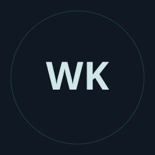

SYSTEM OPERATOR // BIO-LINK
SCROLL TO EXPLORE ARCHIVE 
weebokage
Creator. Author. Archivist.
A Muslim deeply passionate about anime, gaming, Vocaloid, and digital universe design.
PERSONAL ARCHIVEEVERY WORLD STARTS SOMEWHERE
The worlds I return to.
Different frequencies. The same curiosity.
01 / AUDIO
Vocaloid & Audio
Hatsune Miku, System 01. Kasane Teto, System 02. A world of voices, Synthesizer V, and VocaDB discoveries that keep the soundtrack moving.
Find a new frequency ↗ 02 / CULTUREAnime & Culture
Shonen ambition, science-fiction questions, and fantasy worlds. Manga archives and lore analysis, following the threads that make a story stay with you.
Explore the archive ↗ 03 / PLAYGaming & Emulation
Retro classics and modern systems. Handheld setups, emulation, and arcade terminals—a little history, a little experimentation, one more run.
Enter the arcade ↗Leave a little trace.
Stories connect worlds. A message connects people.